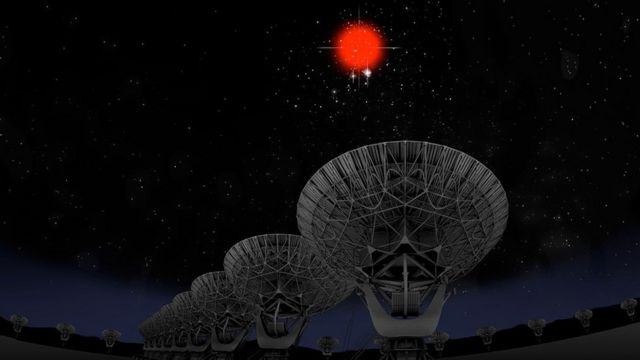

Señales de radio extraterrestres
Las señales de radio extraterrestres: la búsqueda de vida en el universo
Las señales de radio extraterrestres son ondas de radio que podrían ser emitidas por civilizaciones extraterrestres. La búsqueda de estas señales es una de las áreas más activas de la astrobiología, la ciencia que estudia la vida en el universo.
¿Cómo se buscan señales de radio extraterrestres?
Las señales de radio extraterrestres se buscan utilizando radiotelescopios, que son telescopios que captan ondas de radio. Los radiotelescopios más grandes del mundo están ubicados en todo el mundo, y están constantemente escaneando el cielo en busca de señales extraterrestres.
¿Qué tipos de señales se buscan?
Las señales de radio extraterrestres que se buscan pueden ser de dos tipos:
1.- Señales artificiales: Estas señales son emitidas deliberadamente por civilizaciones extraterrestres. Podrían ser señales de comunicación, como transmisiones de televisión o radio, o podrían ser señales de navegación o de otro tipo.
2.- Señales naturales: Estas señales son emitidas por fenómenos naturales, como estrellas o galaxias. Podrían ser señales de origen estelar,
como las emisiones de radio de las estrellas, o podrían ser señales de origen galáctico, como las emisiones de radio de las galaxias.
¿Cuáles han sido los resultados de la búsqueda de señales de radio extraterrestres?
A pesar de la búsqueda intensiva de señales de radio extraterrestres, no se ha detectado ninguna señal que pueda atribuirse a una civilización extraterrestre. Sin embargo, algunos astrónomos creen que es solo cuestión de tiempo antes de que se detecte una señal extraterrestre.
¿Qué implicaría la detección de una señal de radio extraterrestre?
La detección de una señal de radio extraterrestre sería un descubrimiento científico de gran importancia. Implicaría que no estamos solos en el universo, y que existe la posibilidad de que haya otras civilizaciones inteligentes en el cosmos.
La búsqueda de señales de radio extraterrestres es una empresa apasionante que podría cambiar nuestra comprensión del universo. A pesar de los desafíos, los astrónomos siguen siendo optimistas sobre la posibilidad de encontrar señales extraterrestres en el futuro.